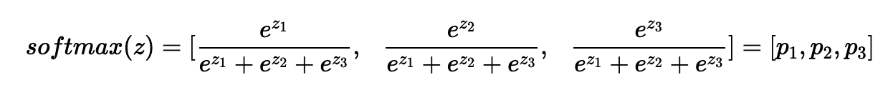

딥러닝의 학습방법
1. 선형모델
데이터를 선형모델로 해석하여 $y$값과 선형모델 예측값 $\hat{y}$의 차이의 $L_2-norm$의 기댓값을 최소화하는 $\beta$를 찾는것이였다.
$${min \parallel y- \hat{y} \parallel}_2$$
그러나 선형 모델은 단순한 선형모델을 푸는데 사용할 수 있지만, 분류(Classification)이나 더 복잡한 패턴의 문제를 제대로 예측하기가 어렵다.
따라서, 비선형모델 신경망(Neural Network)를 사용해보자.
신경망은 비선형모델이지만, 내부적으로는 선형모델들의 결합을 기반으로 만들어져있다.
2. 신경망의 수식 표현
$$ O = XW + b$$
- 전체 데이터가 모인 행렬 $X$
- $X$의 한 행벡터는 하나의 점으로 표현되는 데이터 포인트이다.
- $X$의 데이터를 출력 $O$로 보내주는 가중치 행렬 $W$
- $X$의 데이터를 다른 공간으로 보내주는 역할을 한다.
- $y$ 절편에 해당하는 행벡터를 모든 행에 복제하여 만든 절편 행렬 $b$
- 각 행들은 전부 같은 값 $[b_1,b_2,…,b_p]$ 를 가진다.
이 때, 출력벡터 차원(열)은 기존의 $X$ 벡터 차원 $D$에서 $P$로 바뀌게 된다.
3. 소프트맥스(Softmax) 연산
softmax 함수는 모델의 출력을 확률로 해석 할 수 있게 변환해주는 연산이다. 분류 문제를 풀 때 선형모델과 소프트맥스 함수를 결합하여 예측할 수 있다.
다음은 총 클래수의 수가 3개라고 하였을때, 다음과 같은 결과가 나온다.

단순한 생김새는 “k번일 확률 / 전체 확률”의 생김새로 의외로 간단하다.
단 소프트맥스 함수는 학습 시에만 사용하고 추론할 때는 사용하지 않는다.
추록을 할 때에는 출력값에서 최댓값을 가진 주소만 1로 출력하는 one-hot vector을 사용하며, 주어진 출력 중 최댓값 주소만 가져가는 형태로 구현하기 때문이다.
여기서 우리는 생각해볼 수 있다. 선형함수에 소프트맥스 함수를 적용시켜 선형 모델을 분류문제에 알맞은 확률 추측 모델로 바꾸어서 출력값을 조정할 수 있다면, 선형 함수에 다른 함수를 합성하면 비선형 문제 또한 풀리지 않을까?
4. 활성함수(activation function)
.png)
활성함수는 실수값을 입력으로 받아 -> 다시 실수값을 출력하는 비선형 함수이다.
- 선형모델을 입력으로 받아서 각각의 원소에 대하여 적용된다.
- 즉 활성함수는 벡터 $v = (v_1,v_2,…,v_i)$를 개별적으로 적용하여 새로운 벡터 $v =(f(v_1),…,f(v_i))$를 만들어낸다.
- 이때 이 벡터 $v$를
뉴런이라고 부른다. - 이러한 뉴런의 집합체를
Neural Network라 부른다.
- 이때 이 벡터 $v$를
가장 중요한 점은, 활성함수가 없다면 딥러닝은 선형모델과 차이가 없다는 것이다.
오늘날 가장 유명한 activation function은 Relu이며 다른 활성함수보다 좋은 성능을 보이고 있다.
5. 딥러닝의 학습 원리
5-1.역전파 알고리즘
앞서 말한 신경망은 입력값 $X$를 받아 선형모델 -> 활성함수를 거쳐 출력하는 연산이다.
이때, 가중치 $W$를 학습시키려면 가중치에 대한 gradient 벡터를 연산해야한다.
이 과정을 Backpropagation 알고리즘으로 수행한다.
- 즉 경사하강법을 적용시킨다.
이때 기본적 선형모델과 달리 층이 존재하므로, 각 층에 걸쳐 순차적으로 gradient벡터를 계산한다. (한번에 적용시킬 수 없다는 말!)
사용하는 원리는 합성함수의 미분법 을 이용한다.

신경망이 3층에 걸쳐서 만들어져 있다고 하자. 이때 첫번째 신경망의 gradient는 다음과 같이 구할 수 있다.
$$ {\partial L \over \partial W_1} = {\partial L \over \partial W_3} \times{\partial W_3 \over \partial W_2} \times {\partial W_2 \over \partial W_1} $$
이처럼 딥러닝을 학습시킬때, 각각의 가중치 행렬에 대한 gradient벡터를 SGD에 이용하여, 데이터를 바꾸어가며(mini batch) 파라미터들을 학습 시킨다.